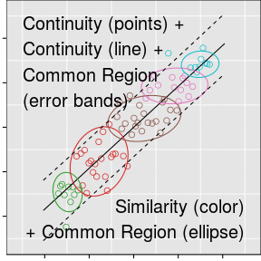

Perception of Statistical Graphics
Susan VanderPlas
April 1, 2015
Purpose
How do we effectively communicate with graphics?
Papers
- Visual Illusions in Statistical Graphics
- Signs of the Sine Illusion: Why We Need to Care
- The Curse of Three Dimensions: Why Your Brain is Lying to You
- Fundamental Skills for Graphical Perception
- Spatial Reasoning and Data Displays
- Quantifying the Effects of Plot Aesthetics
- Statistical Graphics and the Hierarchy of Visual Features
Visual Illusions in Statistical Graphics
-
Signs of the Sine Illusion: Why We Need to Care
- Describes the illusion with real-world context
- Proposes geometry-based transformations
- Presents data from a user study examining the utility of the transformations
- Accepted to JCGS, July 2014
-
The Curse of Three Dimensions:
Why Your Brain is Lying to You- Examines cause of the sine illusion (depth perception)
- Presents a case study of an individual without depth perception
- Presents data from another user study showing the strength of the illusion
- Intended for submission to IEEE Transactions on Applied Perception
Fundamental Skills for Graphical Perception
- Spatial Reasoning and Data Displays
-
- Examines visual skills necessary for lineup evaluation
- Compares performance on lineups to performance on validated tests of visual reasoning ability
- Submitted to InfoVis 2015
Quantifying the Effects of Plot Aesthetics
- Statistical Graphics and the Hierarchy of Visual Features
-
- Modifies the lineup protocol to test two competing hypotheses
- Demonstrates the effect of graphical features of statistical plots (color, trend lines) on perception of displayed data
- Connects gestalt perceptual rules to chart design
- Intended for submission to JCGS or JASA
Lineup Protocol
Signs of the Sine Illusion
Why We Need to Care

Summary
- Derives $x$ and $y$ corrections to the sine illusion
- Provides real-world examples of the sine illusion's effects
- Experimentally evaluated the illusion's strength (and the correction's utility)
- Experimental setup: Method of Adjustment, Data analyzed using linear random effects model
- Conclusion: Sine illusion corrections are effective, the illusion has a significant effect, and full correction is not required
Summary - Results

Example
8-hour Average Ozone Levels in Houston, TX by temperature at Hobby Airport
Example
Residual Ozone Levels in Houston, TX by temperature at Hobby Airport

Explaining the Illusion
The sine illusion results from misapplication of a three-dimensional visual heuristic to ambiguous two-dimensional images
Explaining the Illusion
The sine illusion results from misapplication of a three-dimensional visual heuristic to ambiguous two-dimensional images
 |
In this figure, the vanishing point has been moved towards infinity: the lines are straight and closer to the appearance of the sine illusion. The three-dimensional appearance is still intact. |
Explaining the Illusion
Context Matters
 |
|
Geometry of the Sine Illusion

Geometry of the Sine Illusion
- We perceive the orthogonal width of the implied surface
- The orthogonal width is a function of the x and y range as well as the aspect ratio of the plot.
- The perceived orthogonal width is also a function of the slope of the line tangent to the underlying function curve.
Correcting the Illusion
- Trend Removal
Remove the underlying function, plotting the curve and the residuals separately
-
X Axis Correction
Reparameterize the x-axis in terms of the slope, so that the absolute slope doesn’t change
-
Y Axis Correction
Change the plotted line length (or spread) so that the perceived orthogonal width corresponds to the original (data) line length
Trend Removal
Trend Removal
Trend Removal

It is hard to re-create this graphic with separate curves that still provide all of the information
X-axis Transformation
Let $a$ and $b$ be the minimum and maximum of the $x$-range under consideration.
For any value $x \in (a,b)$ the following transformation results in a function with constant absolute slope:
X-axis Transformation

X-Axis Transformation
Partial Transformations
Shrinkage factor $w \in (0,1)$: allows a less extreme approach to counteracting the illusion
$$(f \circ T_w)(x) = (1-w) \cdot x + w \cdot (f \circ T)(x)$$- $w=1$ is a full transformation
- smaller values of $w$ indicate a less severe correction
- Under weaker transformations the data more closely reflect the original function $f(x)$
X-axis Transformation

Y-axis Transformation
General Correction
 |
If we extend the line length so that the extant width matches the original vertical length, our perceptions will match the original data. |
Y-axis Transformation
General Correction
The function describing the orthogonal line through $(x_o, f(x_o))$ is given in point-vector form as
$$ {x_o \choose f(x_o)} + \lambda{f^\prime(x_o) \choose 1} $$for any real-valued $\lambda$
Y-axis Transformation
General Correction
Point vector form allows us to solve for $\lambda$ easily, giving the extant (half) widths as:
$$ |\lambda| \sqrt{1 + f^\prime(x_o)^2} $$This equation describes the quantity that we **perceive** rather than the quantity that we want to display ($\ell/2$)
Y-axis Transformation
General Correction
The general correction factor is thus
$$ \ell/2 \cdot \left(|\lambda| \sqrt{1 + f^\prime(x_o)^2}\right)^{-1} $$This yields two solutions; one for positive and one for negative values of $\lambda$ corresponding to upper and lower (half) extant width.
Y-axis Transformation
General Correction
In order to get actual numeric values for $\lambda$, we need to find end points $f_1$ and $f_2$. This system of equations provides solutions for those points:
$$ \begin{align} x - x_o &= \lambda f^\prime(x_o) f(x) - f(x_o) \\ &= -\lambda \pm \ell/2 \end{align} $$Solving these equations requires numerical optimization; we will use linear and quadratic taylor series to simplify the optimization processs.
Y-axis Transformation
Linear and Quadratic Approximations

Substituting the endpoints $(x_1, y_1)$ and $(x_2, y_2)$ into the general correction factor produces the linear and quadratic corrections to the sine illusion
Y-axis Transformation
Linear Correction
$$f(x)\approx f(x_0) + (x-x_0) f^\prime(x_0)$$The correction factor is then
$$\ell_{new}(x_0) = \ell_{old}\sqrt{1+f^\prime(x_0)^2}$$Y-axis Transformation
Linear Correction

Y-axis Transformation
Quadratic Correction
$$f(x) \approx f(x_0) + f^\prime(x_0)(x-x_0) + 1/2 f^{\prime\prime}(x_0)(x-x_0)^2$$The general correction system of equation simplifies to
$$ f^{\prime\prime}(x_0) f^\prime(x_0)^2 \lambda^2 + 2(f^\prime(x_0)^2 + 1) \lambda \pm \ell = 0, $$Y-axis Transformation
Quadratic Correction
The corrections for the half lengths are then:
where $v = 1 + f^\prime(x_0)^2$
In the quadratic correction, each half-length is corrected separately, producing a more robust correction
Y-axis Transformation
Quadratic Correction
Y-axis Transformation
Partial Transformations
The y-axis transformation can be weighted in the same manner as the x-axis transformation.
A Shiny applet was created to explore the x and y corrections.
Testing the Corrections
Goal : Determine the strength of the Sine Illusion by measuring how much correction is required for viewers to say that the lines are of equal length.
A different Shiny applet was created to allow users to manipulate the stimuli using fine-grained adjustments to the weight value.
Participants
- Participants were recruited using Amazon Mechanical Turk and Reddit.
- Using the shiny applet, users could manipulate the weight value presented using -/+ buttons until they were satisfied that the lines were of equal length. The trial was finished when users selected the ‘submit’ button.
Data Collection
- User identification information: a ‘fingerprint’ consisting of hashed browser and computer characteristics was used to identify unique users
- IP address localization (34.45.38.XX) provided location information
- Every user interaction was recorded with a timestamp
- Trial finished when user clicked either ‘submit’ or ‘skip’ to opt-out of the trial.
Experiment Design
-
12 (or more) trials, 6 of each correction type
- Each user completed trials starting at 0 and 1 for both correction types
- Additional trials were selected using starting weights between 0.25 and 0.75, with point density highest around 0.6
- After 12 trials, weights were chosen from starting weights between 0 and 1
Data Inclusion Criteria
- Trial recorded at least two user interactions:
The user must adjust the weight value at least once and then click the submit button. - User completed at least 4 trials
- User selected a weight value that was not severely over-corrected or under corrected (i.e. weight value selected was plausible)
Data Inclusion Criteria
Implausibly Over-corrected and Under-corrected Answers
Results
Included Data
Once exclusion criteria were applied, our data consisted of 125 participants who completed 1210 valid trials.
Psychophysics Model
Psychophysics Model
Let $\gamma_X$ represent the optimal weight value for the $X$-correction and $\gamma_Y$ represent the optimal weight value for the $Y$ correction.
$$\gamma_\ast = \frac{1}{2}(w_0 + w_1)$$
where $w_0$ is the preferred weight when starting at 0, and $w_1$ is the preferred weight when starting at 1.
Psychophysics Model
Random Effects Model
- $W_{ij}$ the weight chosen by participant $i$ on trial $j$ $$1 \le i \le 125, 1 \le j \le n_i$$
- $T(i,j)$ the correction type, where $T(i,j) \in \{X, Y\}$
- Starting weight $X_{ij}$
- $\alpha_\ast$, the lowest acceptable weight for correction type $\ast$
- $\beta$, the acceptable weight value interval width
- Participant-level random intercept $\gamma_{i, \ast}$
Random Effects Model
$$ W_{ij} = \alpha_{T(i,j)} + \beta X_{ij} + \gamma_{i, T(i,j)} + \epsilon_{ij}$$
$$ \begin{align} \gamma_{iX} &\stackrel{\text{ i.i.d.}}{\sim} N(0, \eta_X^2) \\ \gamma_{iY} &\stackrel{\text{ i.i.d.}}{\sim} N(0, \eta_Y^2) \\ \epsilon_{ij} &\stackrel{\text{ i.i.d.}}{\sim} N(0, \sigma^2)\\ \text{Cov}(\gamma, \epsilon) &= 0 \end{align}$$
The range of acceptable values is $$(\alpha_\ast, \alpha_\ast + \beta)$$
Random Effects Model
$$ W_{ij} = \alpha_{T(i,j)} + \beta X_{ij} + \gamma_{i, T(i,j)} + \epsilon_{ij}$$
$$ \begin{align} \gamma_{iX} &\stackrel{\text{ i.i.d.}}{\sim} N(0, \eta_X^2) \\ \gamma_{iY} &\stackrel{\text{ i.i.d.}}{\sim} N(0, \eta_Y^2) \\ \epsilon_{ij} &\stackrel{\text{ i.i.d.}}{\sim} N(0, \sigma^2)\\ \text{Cov}(\gamma, \epsilon) &= 0 \end{align}$$
We can compare this model to the psychophysics model using the interval midpoint, $$\alpha_\ast+\beta/2$$
Random Effects Model
Results| Transformation | Threshold | Estimate | 95% C.I. |
|---|---|---|---|
| X | Lower | 0.097 | (0.048, 0.149) |
| Upper | 0.625 | (0.570, 0.684) | |
| Y | Lower | 0.143 | (0.094, 0.187) |
| Upper | 0.671 | (0.622, 0.717) |
Random Effects Model
Conclusions
- Either correction is preferrable to an uncorrected graph
- Corrections do not have to be fully applied to break the illusion’s power
- The sine illusion is strong enough to make participants think that lines of unequal length are equal
Importance to Statistical Graphics
- We can’t judge variability accurately when there is a nonlinear trend.
- Knowing is half the battle; having tools to screen for this effect could also be helpful.
The Curse of Three Dimensions
Why Your Brain is Lying to You
Summary
- Explores the illusion's perceptual foundation: misapplied depth perception
- Examines the illusion using a psychological analogue to Tufte's Lie Factor
- Case study:
An individual with no depth perception is immune to the illusion - Experiment varied underlying function, correction type, and correction weight
- Conclusion:
- Sine illusion is remarkably consistent across participants
- Illusion is likely due to underlying psychological heuristics rather than personal preferences or life experience
Three-Dimensional Context

Case Study
|
D.W., a woman with strabismic amblyopia (lazy eye)
|
|
We asked DW to evaluate several plots of the sine illusion at various correction levels used in the experiment, as well as other depth illusions.
Case Study
Results
- D.W. was not susceptible to the sine illusion or the Muller-Lyer illusion
- D.W. identified the partially corrected images as having the same line length as well
- Only the fully corrected plot of $y=\exp(x)$ seemed to have lines of different length
Understanding the Illusion

We can correct the illusion by increasing the blue line's length until the red line is equal to the actual distance.
The Psychological Lie Factor
$$ \text{Lie Factor} = \frac{\text{Effect Size}_{graphic}} {\text{Effect Size}_{data}} $$ $$ \text{Lie Factor (Brain)} = \frac{\text{Effect Size}_{perception}} {\text{Effect Size}_{graphic}} $$Tufte, E. The Visual Display of Quantitative Information. 2nd ed. USA: Graphics Press, 1991.
Experiment goals
- Estimate the size of the distortion due to the sine illusion
- Establish whether the distortion is similar across functions
-
Explore the variability in individuals' estimated distortion
Is the distortion similar? If so, illusion is probably not due to experience alone
Experimental Design
- Show participants 6 sets of plots with the illusion corrected to different degrees in each plot
- 3 underlying functions: $y=\sin(x)$, $y=\exp(x)$, and $y=x^{-1}$
- Participants are shown 5 plots of $y=\sin(x)$ and 5 plots of either $y=\exp(x)$ or $y=x^{-1}$
The Psychological Lie Factor
In which graph is the size of the curve most consistent?

The Psychological Lie Factor
In which graph is the size of the curve most consistent?

The Psychological Lie Factor
In which graph is the size of the curve most consistent?
The Psychological Lie Factor
In which graph is the size of the curve most consistent?

Experimental Design
- Show participants 6 sets of plots with the illusion corrected to different degrees in each plot
- 3 underlying functions: $y=\sin(x)$, $y=\exp(x)$, and $y=x^{-1}$
- An individual is shown 5 plots of $y=\sin(x)$ and 5 plots of either $y=\exp(x)$ or $y=x^{-1}$
- Participants choose one of the 6 sub-plots which they believe has lines which are the most uniform
-
Individuals completing fewer than 10 trials were removed from the dataset before analysis.
Analyzed data: 106 individuals, 1542 total trials
The Psychological Lie Factor
Lie Factor |
$$ D_k = \frac{\displaystyle\max_{1\leq k \leq 6} \{\text{ line length } \}} {\displaystyle\min_{1\leq k \leq 6} \{\text{ line length } \}} = \displaystyle\max_{1\leq k \leq 6} \{\text{ line length } \} $$ | |
| As not all stimuli contain uncorrected plots... | ||
Psychological
|
For participant $i$ and plot $j$, $$ P_{ij}=\frac{D_{ijk}}{\min_{1\leq k \leq 6} D_{ijk}} $$ |
Of the options available, |
| This adjustment has a very conservative bias. | ||
|
When the lineup includes an uncorrected plot, $P_{ij}=D_{ij}$. |
||
Model Details
Flat priors, truncated normal data model (since $P_{ij}\geq 1$)
$$ \begin{align} \text{Priors: } \pi(\theta) & = 0.4, 1 \leq \theta \leq 2.5\\ \hphantom{\text{Priors: }} \pi(\sigma) & = 2.5, .1 \leq \sigma\leq .5\\ \text{Data Model: } f(\theta | P, \mu, \theta) &\sim \text{trunc.}N(\mu, \theta), $\theta\geq 1$ \end{align} $$Results
4 individuals who completed at least 5 trials of each function type
Results
Individual and Group Estimates for $\theta$

Estimated posterior densities for participant-specific $\theta_i$ (in color) and overall density for $\theta$ shown in black.
Results

95% posterior predictive intervals for $\theta_i$, for each function type. Vertical lines indicate the median estimate of overall $\theta$ with a 95% credible interval.
Visual Aptitude and Data Displays
Summary
- Explores the visual skills required to evaluate lineups
- Compares performance on 3 blocks of 20 lineups each to performance on tests of visual reasoning and spatial aptitude
- Participants: ISU Undergraduates
- Conclusion:
- Lineups are a classification task in a visual domain
- Overall, lineups do not appear to require specific visuospatial skills (outside of overall intelligence/aptitude)
- Lineup performance is mediated by demographic factors such as completion of Calculus I and STEM training.
Visual Search Test
|
Measures ability to locate a target in a field of distractors Participants complete up to 20 questions in 5 minutes. Goldstein, G., R. B. Welch, P. M. Rennick, et al. “The validity of a visual searching task as an indicator of brain damage.” In: Journal of consulting and clinical psychology 41.3 (1973), p. 434. |
Figure Classification Test
Measures ability to classify images according to ambiguous or unknown rules
Participants complete up to 14 questions (each with 8 figures) in 8 minutes.
French, J. W., R. B. Ekstrom and L. A. Price. Kit of reference tests for cognitive factors. Educational Testing Service. Princeton, NJ, 1963.
Card Rotation Test
Measures ability to rotate objects in two dimensions
Participants complete up to 20 questions (each with 8 figures) in 6 minutes.
French, J. W., R. B. Ekstrom and L. A. Price. Kit of reference tests for cognitive factors. Educational Testing Service. Princeton, NJ, 1963.
Paper Folding Test

Measures ability to visualize and mentally manipulate objects in three dimensions.
Participants complete up to 20 questions in 6 minutes.
French, J. W., R. B. Ekstrom and L. A. Price. Kit of reference tests for cognitive factors. Educational Testing Service. Princeton, NJ, 1963.
Lineups

|
3 blocks of 20 lineups each Each set of lineups is from a different study Participants have 5 minutes to complete each block of 20 lineups Majumder, M., H. Hofmann and D. Cook. “Validation of visual statistical inference, applied to linear models”. In: Journal of the American Statistical Association 108.503 (2013), pp. 942–956. |
Scores
Scoring is calculated so that for each question, the expected score with random guessing would be 0
$$\# \text{correct answers } - 1/(k-1) \cdot \# \text{wrong answers}$$Scores
|
|
|
Lineups & Demographics
Lineups & Demographics
| Variable | DF | MeanSq | F | p.val |
|---|---|---|---|---|
| STEM Major | 1 | 401.517 | 14.44 | 0.001 |
| Calculus 1 | 1 | 204.569 | 6.15 | 0.018 |
| Video Game hrs | 3 | 108.847 | 3.44 | 0.028 |
| Sex | 1 | 140.844 | 4.02 | 0.053 |
| Art Skills | 4 | 75.891 | 2.28 | 0.082 |
| Verbal Skills | 3 | 60.220 | 1.68 | 0.191 |
| STEM Research | 1 | 59.670 | 1.60 | 0.214 |
| AutoCAD | 1 | 50.893 | 1.36 | 0.252 |
| Age | 1 | 34.434 | 0.91 | 0.348 |
| Math Skills | 3 | 37.039 | 0.98 | 0.416 |
| Statistics Class | 1 | 9.062 | 0.23 | 0.631 |
Lineups and Visual Aptitude
Lineups and Visual Aptitude
Principal Components Analysis
- Lineups are most similar to the figure classification task in PC space
- The first PC is always a measure of "general aptitude" and is the only statistically significant linear predictor of lineup performance
- Each lineup task may require different visual skills
Visual Aptitude by Lineup Type
Visual Aptitude by Lineup Type
- Lineups which test distribution differences are more correlated with the Figure Classification test
- Lineup Set 3 (QQ plots) is more correlated with the card rotation and paper folding tests
- Different lineup types should be examined more closely to determine whether some lineup types recruit specific spatial skills
Hierarchy of Visual Features
Outline
Human Perception and Statistical Graphics
Preattentive Feature Detection
Preattentive perception occurs before conscious attention is focused on the stimulus, within the first 200 ms

Perception of Statistical Plots
|


|
Gestalt Laws of Perception
|

|
"The whole is different from the sum of the parts"
Gestalt Laws
|
|
|
Experiment:
How do plot aesthetics affect
perception of statistical plots?

Lineups: "Which plot is the most different?"
|
Answer: 9 |
Standard design:
Buja, A., Cook, D., Hofmann, H., Lawrence, M., Lee, E. K., Swayne, D. F., and Wickham, H. (2009). Statistical inference for exploratory data analysis and model diagnostics, Phil. Transac. Majumder, M., Hofmann, H., and Cook, D. (2013). Validation of visual statistical inference, applied to linear models, JASA Wickham, H., Cook, D., Hofmann, H., and Buja, A. (2010). Graphical inference for infovis, TVCG |
Lineups: "Which plot is the most different?"

Trend target: 12, Cluster target: 5 |
Modification:
Participant Responses
|
Lineups: "Which plot is the most different?"

Trend target: 12, Cluster target: 5 |
Modification:
Participant Responses
|
Data-Generating Models


| Parameters | ||
| $\sigma_T$: Variability in $y$ | $\lambda$: Mixing parameter | $K$: # clusters |
| $\sigma_C$: Variability around cluster centers | ||
Trend Model $M_T$
Input: sample size $N$, $\sigma_T$ standard deviation from the line $y=x$
Output: vectors $x$ and $y$ with $N$ observations
- Generate $\tilde{x}_i$, $i=1, ..., N$, as a seq. of evenly spaced points from $[-1, 1]$.
- Jitter $\tilde{x}_i$ by adding small perturbations
- Generate $y_i$ as a linear function of $x_i$: $y_i = x_i + e_i$, $e_i \sim N(0, \sigma^2_T)$.
- Center and scale $x_i$, $y_i$

Cluster Model $M_C$
Input: sample size $N$, number of clusters $K$, cluster std. dev. $\sigma_C$
Output: vectors $\mathbf{x}$ and $\mathbf{y}$ with $N$ observations
- Generate $K$ cluster centers $(c^x, c^y)$ on a $K\times K$ grid; center and scale
- Sample group sizes $g = (g_1, ..., g_K)$ with $N = \sum_{i=1}^K g_i$
- Jitter points around cluster centers by $ N(\mathbf{0}, \sigma^2_C)$
- Center and scale $x_i$, $y_i$
Cluster Model $M_C$

Null Model $M_0$
Input: sample size $N$, number of clusters $K$, $\sigma_C$, $\sigma_T$, and mixing parameter $\lambda$
Output: vectors $\mathbf{x}$ and $\mathbf{y}$ with $N$ observations
- Generate datasets from $M_C$ and $M_T$
- Select $n_c \sim \text{Binomial}(N, \lambda)$ points from the data generated by $M_C$
- Select $n_T = N - n_c$ points from the data generated by $M_T$
- Center and scale the points in $x$ and $y$
- Assign groups using hierarchical clustering
Null Model $M_0$
Measuring Signal Strength
| Trend | $$\displaystyle R^2 = \frac{SS_{Reg}}{SS_{Tot}}$$ |
| Cluster | For $(x_{ij}, y_{ij})$ the $j$th point in cluster $i$
$$SS_{C} = \sum_{i=1}^K\limits \sum_{j=1}^{N_i}\limits \left(x_{ij} - \overline{x}_{i}\right)^2 + \left(y_{ij} - \overline{y}_{i} \right)^2$$ $$SS_{Tot} = \sum_{i=1}^K\limits \sum_{j=1}^{N_i}\limits \left(x_{ij} - \overline{x}\right)^2 + \left(y_{ij} - \overline{y} \right)^2$$ Define $C^2 := \frac{SS_C}{SS_{Tot}}$ to measure cluster cohesion. |
Parameter Values: Simulation
For all combinations of $\sigma_T\in\{0.2, 0.25, ..., 0.5\}$$\sigma_C\in\{0.1, 0.15, ..., 0.4\}$
$K\in\{3,5\}$
- Generate 1000 datasets consisting of the following sub-plot datasets:
1 from $M_T$, 1 from $M_C$, and 18 from $M_0$ - For each lineup dataset, calculate the following:
- Trend target $R^2$
- Maximum null plot $R^2$
- Cluster target $C^2$
- Maximum null plot $C^2$
Simulation:
$\sigma_T=0.25$, $\sigma_C=0.20$, and $K=3$
Plot Aesthetic Combinations
| Trend Emphasis | ||||
| Strength | 0 | 1 | 2 | |
| Cluster Emphasis |
0 | Plain | Line | Line + Pred. Interval |
| 1 | Color Shape |
Color + Line | ||
| 2 | Color + Shape Color + Ellipse |
Color + Ellipse + Line + Pred. Interval |
||
| 3 | Color + Shape + Ellipse | |||
Shapes conform to guidelines in Robinson (2003) and Lewandowsky & Spence (1989).
Plot Aesthetic Combinations

Experimental Structure
Model Parameters
|
Plot Level
|
Plot Aesthetics
|
Evaluation Level
|
Data Collection
- Participants recruited through Amazon Mechanical Turk
- Experiment ran for
23.8hours -
1356individuals completed13519evaluations - Data removed:
- Participants who did not complete 10 trials:
159participants,1060trials - Any trials in excess of 10 for each participant (
421trials)
Final dataset: 12010 trials completed by 1201 participants.
Data Collection
Participants provided:
- Demographic information: age range, gender, education level
- 10 plot evaluations
- Target plot identification (one or more sub-plots)
- Level of confidence in their answer (1 = least, 5=most)
- Reasoning
(i.e. "Strongest linear relationship", "Clustered points", "Odd shape")
Results
Target Identification

Participants selected more cluster targets than line targets, however, 5 plot types were expected to emphasize clustering, and only 2 plot types were expected to emphasize trends.
Modeling Target Selection
| $$\text{logit }Y$$ | $$ = \textbf{X}\beta$$ | $$+ \textbf{J}\gamma$$ | $$ + \textbf{K}\eta + \epsilon$$ |
| where fixed effects $\beta_i$ describe the effect of specific plot types |
|||
| $\gamma_j \overset{iid}{\sim} N\left(0, \sigma^2_{\text{dataset}}\right)$ | |||
| $\eta_k \overset{iid}{\sim} N\left(0, \sigma^2_{\text{participant}}\right)$ | |||
| $\epsilon_{ijk} \overset{iid}{\sim} N\left(0, \sigma^2_e\right)$ | |||
Dataset and participant effects are orthogonal by design
Variability due to model parameters is contained within the random effects for dataset
Modeling Single Target Selection
Target: Trend Plot $M_T$
$Y = \text{Participant selected the plot generated by }M_T$Plot types are significantly different if they do not share a letter
|
Participants are | Participants are |
Target: Cluster Plot $M_C$
$Y = \text{Participant selected the plot generated by }M_C$
Plot types are significantly different if they do not share a letter
|
Participants are | Participants are |
Cluster Target Identification

Trend target: 20, Cluster target: 11 |
Participant Responses
|
||||||||||||||
Faceoff: Cluster vs. Trend?
Cluster vs. Trend
Define $C_{ijk}$ to be the event
{Participant $k$ selects the cluster target for dataset $j$ with aesthetic set $i$},
and $T_{ijk}$ to be the analogous selection of the trend target.
Cluster vs. Trend

Plot types are significantly different if they do not share a letter
|
Participants are |
Participants are |
Mixed Signals?
Exploring the gestalt of plots with conflicting aesthetics
 |
 |
 |
Participants are 1.58 times as likely to select the cluster target with color + trend line, relative to the plain plot.
|
|
 |
 |
 |
Participants are 0.59 times as likely to select the cluster target with color + ellipse + trend line + pred. int., relative to the plain plot.
|
Participant Reasoning
Participant Reasoning
Plain Plots


| Neither Target (N=127) | Cluster Target (N=712) | Trend Target (N=355) |
Participant Reasoning
Trend line


| Neither Target (N=159) | Cluster Target (N=694) | Trend Target (N=333) |
Participant Reasoning
Color Plots

| Neither Target (N=188) | Cluster Target (N=715) | Trend Target (N=292) |
Participant Reasoning
Color + Ellipse Plots


| Neither Target (N=347) | Cluster Target (N=621) | Trend Target (N=222) |
Response Time
Summary: Response Time
- First trials take more time than subsequent trials
- Participants take more time to evaluate plots with more aesthetics
- Participants who identify a single target are faster than those who did not successfully identify a target; Identifying both targets takes the most time

Response Time
$$ \begin{align} \log(\text{Trial Time}) &\sim \textbf{X}\beta + \textbf{J}\gamma + \textbf{K}\eta + \epsilon\\ \text{where } \beta_i & \text{ describe outcome and aesthetic combinations,}\\ & \text{ plus an initial trial effect}\\ \hphantom{where } \gamma_j & \overset{iid}{\sim} N\left(0, \sigma^2_{\text{dataset}}\right)\\ \hphantom{where } \eta_k & \overset{iid}{\sim} N\left(0, \sigma^2_{\text{participant}}\right)\\ \text{and } \epsilon_{ijk} & \overset{iid}{\sim} N\left(0, \sigma^2_e\right) \end{align} $$
Response Time

Participants take more time to evaluate plots with more aesthetics.
Participants who identified a single target plot were faster than participants who could not identify a target plot.
Response Time
Discussion
Conclusions
- Plot aesthetics influence perception of ambiguous data displays
- Aesthetic effects are not additive:
Conflict conditions don't show similar/neutral results - Aesthetics which recruit new gestalt heuristics have more influence, and we can quantify the size of that influence
- Uneven groups in null plots emphasize different features
(but still show the importance of aesthetic/heuristic interactions) - The lineup method allows us to examine why participants switched hypotheses from "Linear relationship" or "Clusters of points" to "Uneven groups"
Similar to a Type III error: the error of giving the right answer to the wrong problem (A.W. Kimball)
Future Work
- Restrict group sizes so null plots have the same objects as target plots
- Explore the effect of different types of common region for error bands and ellipses - shading, bounding boxes, etc.
- Test ellipse and error band aesthetics alone and with trend lines and color to examine interaction effects
- Test plotted statistics (trend line, ellipses, error bands) with and without data points to examine interactions between heuristics from the data and heuristics from summary statistics
Simulation Details
Simulation: Parameter Space
Values of $\sigma_T = .25, .35, .45$ will provide easy, medium, and hard difficulty levels for trend target identification.
Simulation: Parameter Space
Values of $K=3: \sigma_C = \{.25, .3, .35\}$
$K=5: \sigma_C= \{.2, .25, .3\}$ will provide easy, medium, and hard difficulty levels for cluster target identification.